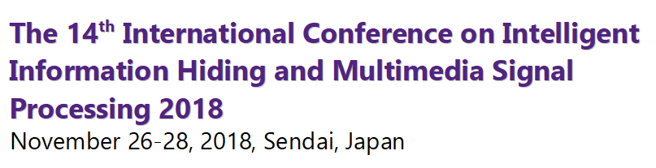
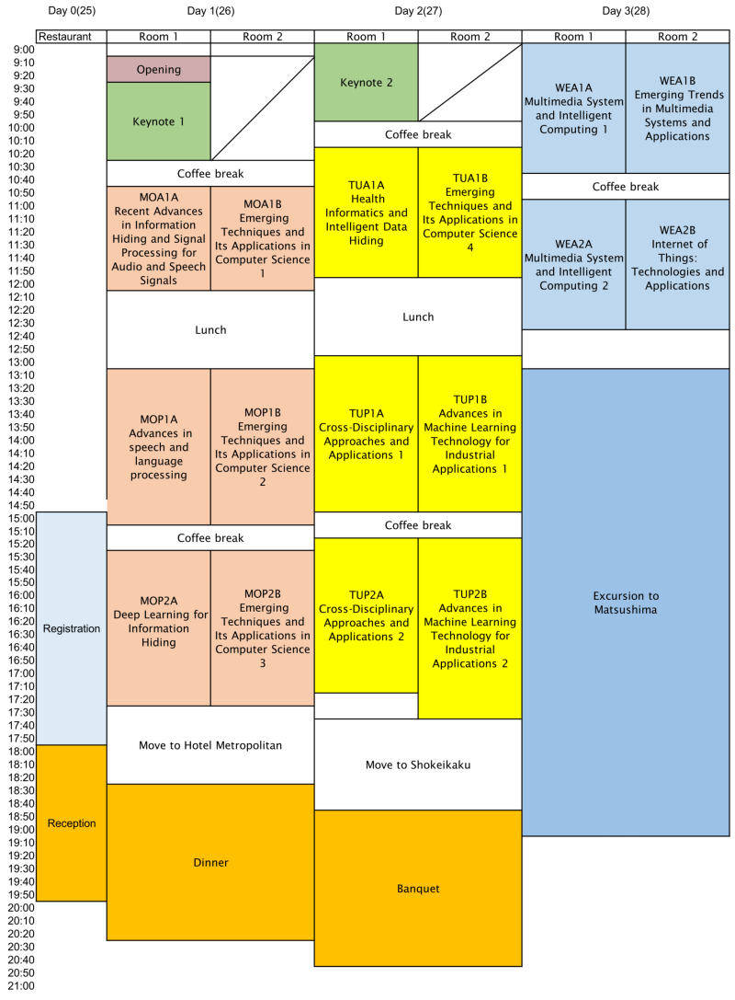

Conference Program
Program at a glance

Technical Program
MOA1A: Recent Advances in Information Hiding and Signal Processing for Audio and Speech Signals
26 September, 11:00-12:20
Room 1
Session Chair: TBD
MOA1A-1 An Interrogation Speech Manipulation Detection Method using Speech Fingerprinting and Watermarking Room 1
Session Chair: TBD
MOA1A-2 Digital Audio Watermarking Method Based on Singular Spectrum Analysis with Automatic Parameter Estimation Using a Convolutional Neural Network
MOA1A-3 Muting Machine Speech Using Audio Watermarking
MOA1A-4 Leveraging a Small Corpus by Different Frame Shifts for Training of a Speech Recognizer
MOA1B: Emerging Techniques and Its Applications in Computer Science 1
26 September, 11:00-12:20
Room 2
Session Chair: TBD
MOA1B-1 A Hybrid NSGA-II for Matching Biomedical Ontology Room 2
Session Chair: TBD
MOA1B-2 Multi-attributes Graph Algorithm for Association Rules Mining over Energy Internet
MOA1B-3 Real-time Electricity Pricing Trend Forecasting based on Multi-density Clustering and Sequence Pattern Mining
MOA1B-4 TDT_CC: A Hot Topic Detection and Tracking Algorithm based on Chain of Causes
MOP1A: Advances in speech and language processing
26 September, 13:20-15:20
Room 1
Session Chair: TBD
MOP1A-1 Evaluation of English Speech Recognition for Japanese Learners Using DNN-based Acoustic Models Room 1
Session Chair: TBD
MOP1A-2 A Study on a Spoken Dialogue System with Cooperative Emotional Speech Synthesis Using Acoustic and Linguistic Information
MOP1A-3 Comparison of Speech Recognition Performance between Kaldi and Google Cloud Speech API
MOP1A-4 Segmental pitch control using speech input based on differential contexts and features for customizable neural speech synthesis
MOP1A-5 Two-Stage Sequence-to-Sequence Neural Voice Conversion with Low-to-High Definition Spectrogram Mapping
MOP1A-6 Improvement of Accent Sandhi Rules Based on Japanese Accent Dictionaries
MOP1B: Emerging Techniques and Its Applications in Computer Science 2
26 September, 13:20-15:20
Room 2
Session Chair: TBD
MOP1B-1 A New Approximation Algorithm for the d-dimensional Knapsack Problem based on Hopfeld Networks Room 2
Session Chair: TBD
MOP1B-2 A Method of Cancellation Interference In CCFD System
MOP1B-3 Power Optimization Method of Magnetic Coupling Resonant Wireless Energy Transmission System
MOP1B-4 PSO-AFSA Global Maximum Power Point Tracking Algorithm with Adaptive Evolutionary Strategy for PV System
MOP1B-5 The Design of RFID Localization System for Library Books
MOP1B-6 The Design and Implementation of Automatic Detection and Control Equipment with Unattended Truck Scales
MOP2A: Deep Learning for Information Hiding
26 September, 15:50-17:50
Room 1
Session Chair: TBD
MOP2A-1 Melody Completion Based on Convolutional Neural Networks and Generative Adversarial Learning Room 1
Session Chair: TBD
MOP2A-2 Data Collection and Analysis for Automatically Generating Record of Human Behaviors by Environmental Sound Recognition
MOP2A-3 DNN-Based Talking Movie Generation with Face Direction Consideration
MOP2A-4 An Image Steganography Algorithm Based on Pixel Block Difference and Variable Modulus Function
MOP2A-5 Attack Pattern Mining Algorithm Based on Fuzzy Clustering and Sequence Pattern from Security Log
MOP2A-6 Calculating the truck's box volume with a single image under the circle projection and vanishing points constraint
MOP1B: Emerging Techniques and Its Applications in Computer Science 3
26 September, 15:50-17:50
Room 2
Session Chair: TBD
MOP2B-1 An Interactive Appliances' Intelligent Control Method Based on Time-sharing Electricity Price Room 2
Session Chair: TBD
MOP2B-2 Modification Algorithm to Node Localization Error for Wireless Sensor Networks
MOP2B-3 A Real-time Missing Data Recovery Method Using Recurrent Neural Network for Multiple Transmissions
MOP2B-4 The extraction and application of the Color Texture Feature Based on Quaternion Gabor
MOP2B-5 Analysis and Detection of Android App Privilege Escalation Vulnerability Based on Machine Learning
MOP2B-6 A Watermarking Method for Printed QR Code based on Module Expansion
TUA1A: Health Informatics and Intelligent Data Hiding
27 September, 10:30-12:10
Room 1
Session Chair: TBD
TUA1A-1 An Improved High-Capacity ECG Steganography with Smart Offset Coefficients Room 1
Session Chair: TBD
TUA1A-2 Preview-versioned Essential Secret Image Sharing
TUA1A-3 Visual Cryptography with QR-code transparencies
TUA1A-4 Solving multiple charging vehicles scheduling problem for wireless rechargeable sensor networks using cuckoo search approach
TUA1A-5 A State Codebook Generation Algorithm of Side Match Vector Quantization
TUA1B: Emerging Techniques and Its Applications in Computer Science 4
27 September, 10:30-12:10
Room 2
Session Chair: TBD
TUA1B-1 Research on Optimal Combination of Secondary Hybrid Encryption Algorithm Based on K-means Clustering Algorithm Room 2
Session Chair: TBD
TUA1B-2 Construct Left Ventricular Hypertrophy Prediction Model based on Random Forest
TUA1B-3 The Bayesian Causal Inference in Multisensory Information Processing: a Narrative Review
TUA1B-4 The Neural Mechanism of Audiovisual Integration Modulated by Attention: a DCM Study
TUA1B-5 On the security of a three factor remote user authentication scheme using fuzzy extractor
TUP1A: Cross-Disciplinary Approaches and Applications 1
27 September, 13:10-15:10
Room 1
Session Chair: TBD
TUP1A-1 A Novel Tamper Detection and Image Recovery Technique for Color Image Demosaicking Room 1
Session Chair: TBD
TUP1A-2 Improving Latency and Reliability for Vehicle System under Fog Computing Networks
TUP1A-3 Nominate Connected Dominating Set Algorithm in Mobile Ad Hoc Network
TUP1A-4 The Keywords of Affecting Performance for Live Streaming
TUP1A-5 Mobile Coupons Using Blockchain Technology
TUP1A-6 Dual Image Reversible Data Hiding Based on Modified LSB Matching Method
TUP1B: Advances in Machine Learning Technology for Industrial Applications 1
27 September, 13:10-15:10
Room 2
Session Chair: TBD
TUP1B-1 Security Analysis of a Public Key Authenticated Encryption with Keyword Search Scheme Room 2
Session Chair: TBD
TUP1B-2 The research about Topic Extraction Method Based on the DTS-ILDA Model
TUP1B-3 The Study of Power Server operations Information Visualization Key Technologies
TUP1B-4 Heart Rate Detection Based on Facial Feature Points Tracking
TUP1B-5 3D MODELING FOR UPPER OF SHOE BASED ON BILATERAL TRIANGULATION
TUP1B-6 A New Application of Hyperspectral Techniques in Drug Classification
TUP2A: Cross-Disciplinary Approaches and Applications 2
27 September, 15:40-17:40
Room 1
Session Chair: TBD
TUP2A-1 A Survey of Semi-Fragile Watermarking Authentication Room 1
Session Chair: TBD
TUP2A-2 A High Payload Edge Detection-Based Image Steganography Robust to RS-Attack by Using LSB Substitution and Pixel Value Differencing
TUP2A-3 High-Capacity Reversible Data Hiding Based on Star-Shaped PVO Method
TUP2A-4 New Anatomy of Consensus in a Multiple Damage Communication VANET
TUP2A-5 Customer Management and Marketing Strategy Development in the Internet of Things
TUP2A-6 Privacy-Preserving Reversible Watermarking for Data Extration Prevention Through Lexicographic Permutations
TUP2B: Advances in Machine Learning Technology for Industrial Applications 2
27 September, 15:40-17:40
Room 2
Session Chair: TBD
TUP2B-1 Evaluation of DoS Attacks on Vehicle CAN Bus System Room 2
Session Chair: TBD
TUP2B-2 Deep Learning-based Identification of Steel Products
TUP2B-3 Reinforcement Learning-based Two-Wheel Robot Control
TUP2B-4 A localization approach based on Fixed 3D Objects for Autonomous Robots
TUP2B-5 Clockwise and counter-clockwise torsion in different operational angles on transverse plane
TUP2B-6 Micro Physiological Vibration Detection for Human Heartbeats
WEA1A: Multimedia System and Intelligent Computing 1
28 September, 9:00-10:40
Room 1
Session Chair: TBD
WEA1A-1 Denoising of ECG Signal with Power Line and EMG Interference based on Ensemble Empirical Mode Decomposition Room 1
Session Chair: TBD
WEA1A-2 Using the Photoplethysmography Technique to Improve the Accuracy of LVET Measurement in the ICG Technique
WEA1A-3 Network Anomaly Detection Based on Artificial Intelligence
WEA1A-4 Traffic Flow Correlation Analysis of K Intersections Based on Deep Learning
WEA1A-5 Detecting Attention and Meditation EEG Utilized Deep Learning
WEA1B: Emerging Trends in Multimedia Systems and Applications
28 September, 9:00-10:40
Room 1
Session Chair: TBD
WEA1B-1 The Properties of Order and Failure Estimation on Redundancy System Room 1
Session Chair: TBD
WEA1B-2 Hepatic Texture Synthesis Method Based on the Accelerated CUDA
WEA1B-3 A P2P Multimedia Service System based on Mesh Chords
WEA1B-4 Resolution Reduction for Two-Phase Test Sample Representation in Face Recognition
WEA1B-5 Path Finding for Road Accessibility in Maze using BLOB Extraction
WEA2A-1 Improving the Implementation of Sensor Nodes for Illegal Logging Detection
WEA2A: Multimedia System and Intelligent Computing 2
28 September, 11:10-12:50
Room 1
Session Chair: TBD
WEA2A-2 A Study on CNC Machine Training Based on Virtual Reality Technology Room 1
Session Chair: TBD
WEA2A-3 Forecasting for the Total Electricity Consumption of Taiwan by Fuzzy Time Series
WEA2A-4 Performance Analysis of Grouping Strategy in Relay-based Cooperative Networks
WEA2A-5 The Development of Display Interface for Automatic Identification System and Digital Selective Calling System
WEA2B: Internet of Things: Technologies and Applications
28 September, 11:10-12:50
Room 1
Session Chair: TBD
WEA2B-1 Intelligent Infant Monitoring System Involving a Wi-Fi Wireless Sensor Network Room 1
Session Chair: TBD
WEA2B-2 Long Lifetime Data Aggregation Using Geographic Division in Wireless Sensor Networks
WEA2B-3 Distortion function for Steganography in Texture Synthesized Images
WEA2B-4 A Design Exploration of Wearable Companion of Smartphone
WEA2B-5 Research and implementation of fuzzy control method of UAV formation with ad hoc network